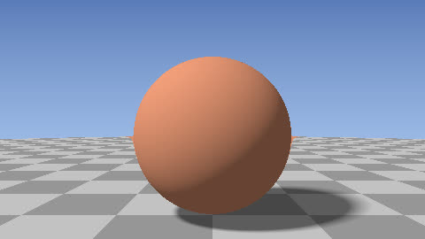

HomeAccueil / ExamplesExemples
Lit sphere and planeSphère et plan éclairés
Ray marching over a signed distance function; normal by finite differences, diffuse light and soft shadow.Marche de rayons sur une fonction de distance signée ; normale par différences finies, lumière diffuse et ombre douce.

CategoryCatégorie: Ray marchingRay marching - sphere_eclairee.glsl - 30 lineslignes - File on GitHubFichier sur GitHub
In the program: Examples, choose it, Add to the list. Or copy the code into a file next to the program and drop it on the window.Dans le programme : Exemples, choisissez-le, Ajouter à la liste. Ou copiez le code dans un fichier et glissez-le sur la fenêtre.
CodeCode
sphere_eclairee.glsl
// SPDX-License-Identifier: GPL-3.0-or-later
// Copyright (C) 2026 Patrick JAILLET
// fr: Sphère et plan éclairés — Marche de rayons sur une fonction de distance signée ; normale par différences finies, lumière diffuse et ombre douce.
// en: Lit sphere and plane — Ray marching over a signed distance function; normal by finite differences, diffuse light and soft shadow.
float map(vec3 p) {
float s = length(p - vec3(0.0, 0.6 + 0.3 * sin(iTime), 0.0)) - 0.8;
return min(s, p.y + 0.2);
}
vec3 nrm(vec3 p) {
vec2 e = vec2(0.001, 0.0);
return normalize(vec3(map(p + e.xyy) - map(p - e.xyy), map(p + e.yxy) - map(p - e.yxy), map(p + e.yyx) - map(p - e.yyx)));
}
void mainImage(out vec4 fragColor, in vec2 fragCoord) {
vec2 uv = (fragCoord - 0.5 * iResolution.xy) / iResolution.y;
vec3 ro = vec3(0.0, 0.8, -3.5), rd = normalize(vec3(uv, 1.4));
float t = 0.0;
for (int i = 0; i < 100; i++) { float d = map(ro + rd * t); if (d < 0.001 || t > 20.0) break; t += d; }
vec3 col = mix(vec3(0.5, 0.7, 1.0), vec3(0.1, 0.2, 0.5), uv.y + 0.5);
if (t < 20.0) {
vec3 p = ro + rd * t, n = nrm(p), l = normalize(vec3(-0.6, 0.8, -0.4));
float sh = 1.0, tt = 0.02;
for (int i = 0; i < 40; i++) { float d = map(p + l * tt); sh = min(sh, 8.0 * d / tt); tt += clamp(d, 0.02, 0.5); if (sh < 0.01) break; }
vec3 alb = p.y < -0.19 ? vec3(0.4 + 0.3 * mod(floor(p.x) + floor(p.z), 2.0)) : vec3(0.9, 0.35, 0.2);
col = alb * (0.15 + 0.85 * max(dot(n, l), 0.0) * clamp(sh, 0.0, 1.0));
}
fragColor = vec4(pow(col, vec3(0.4545)), 1.0);
}